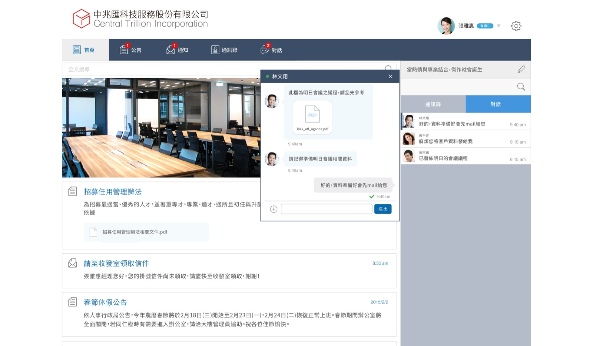
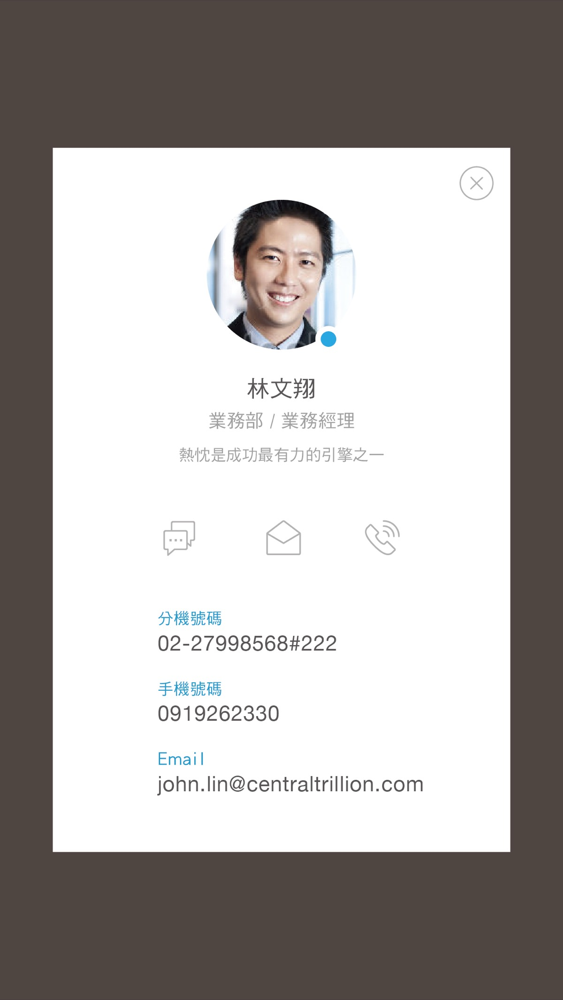
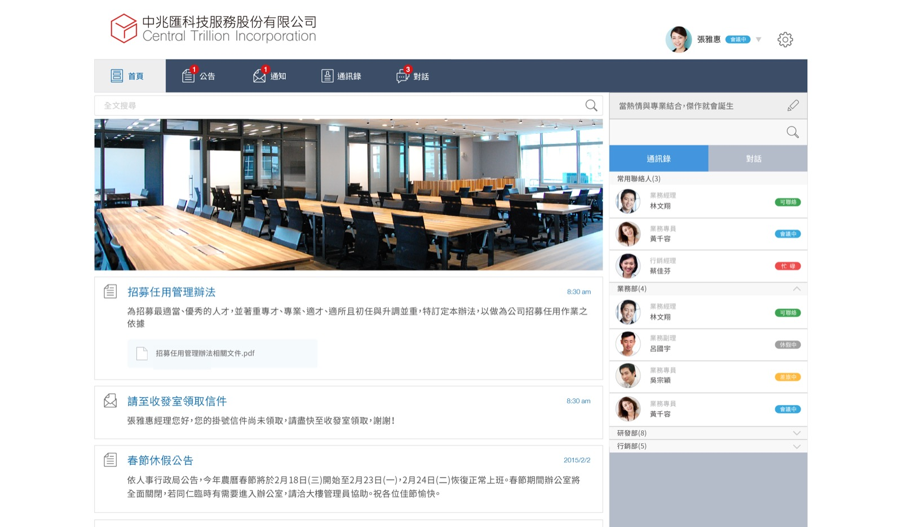

BPM
行動簽核
行動公文簽核，提升行政流程執行效率。
加值服務 · Workflow
STRATEGIC PARTNERSHIP
WorkLink 是歷經十年市場驗證的企業雲端應用平台，連結企業流程、行動人力與現場執行。現在，我們開放與擁有企業客戶、產業場景與科技服務能力的夥伴，共同進入下一個規模化成長階段。


WHAT IS WORKLINK?
WorkLink enterprise SaaS 提供企業資訊傳遞及業務流程運行各式功能，充分滿足行動時代商務應用需要。
ENTERPRISE APPLICATIONS
以標準化服務模組，連結企業每日真正發生的工作。
BPM
行動公文簽核，提升行政流程執行效率。
加值服務 · Workflow
EAM
地理定位打卡，有效掌握團隊出勤狀態。
加值服務 · Mobile WorkforceFSM
多點多時簽到，便捷管理人員勤務紀錄。
加值服務 · Field OperationsAI EXECUTION LAYER
BUILT TO GROW WITH YOUR ECOSYSTEM
If you already own the customer relationship,
WorkLink can become the execution platform behind it.
PARTNERSHIP MODELS
從標準化通路，到平台整合與企業級科技策略，WorkLink 與夥伴共同建立長期價值。
標準通路合作
適合擁有企業客戶與產業信任的夥伴，以標準化產品服務、導入支援與市場拓展共同服務企業客戶。策略經銷合作
適合擁有大量企業客戶或垂直產業資源的策略夥伴，透過規模化授權與市場合作，共同建立長期 SaaS 成長。平台與生態整合
透過 API、聯合方案或品牌合作，將 WorkLink 嵌入既有科技與企業服務生態。企業與科技策略機會
Platform Ownership · Technology Integration · Strategic Alignment對於尋求更深層平台整合、技術資產布局與長期策略協同的企業，WorkLink 開放探索更廣泛的企業與科技合作機會，相關討論將依適當保密機制進行。CONFIDENTIAL STRATEGIC CONVERSATION
若您正在評估通路拓展、平台整合或企業級科技策略，歡迎留下資訊，讓我們從適合的合作方向開始。